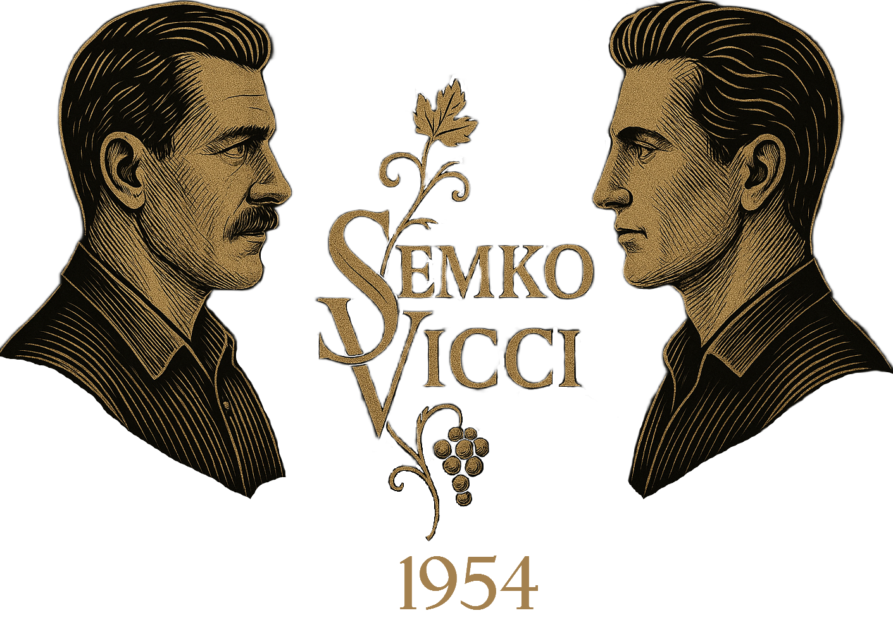

A wine born of two journeys
▼ Scroll down to uncover the story ▼
Un vino nato da due viaggi
▼ Scorri per scoprire la storia ▼
Taras Semko knew his land the way a man knows his mother's face. Every furrow on his small farm near Ternopil had been shaped by his hands. But history doesn't knock before it enters. After Western Ukraine was annexed by the Soviet Union, Taras was branded a kulak — his hard work suddenly a mark against him. With no future in the collective farms and the threat of arrest looming, he made the hardest decision of his life: to walk away. Not from the soil — soil stays in a man's blood — but from a place where that soil was no longer his. Through Kraków, through strange cities, through the chaos of war, he drifted south. Somewhere warm, he'd heard. Somewhere a man could start again.
Taras Semko conosceva la sua terra come un uomo conosce il volto di sua madre. Ogni solco nella sua piccola fattoria vicino a Ternopil era stato plasmato dalle sue mani. Ma la storia non bussa prima di entrare. Dopo l'annessione dell'Ucraina occidentale all'Unione Sovietica, Taras fu bollato come kulak: il suo duro lavoro diventò all'improvviso una colpa. Senza futuro nei kolchoz e con la minaccia dell'arresto, prese la decisione più difficile della sua vita: andarsene. Non dalla terra — la terra resta nel sangue di un uomo — ma da un luogo dove quella terra non era più sua. Attraverso Cracovia, attraverso città sconosciute, attraverso il caos della guerra, si diresse a sud. Da qualche parte al caldo, aveva sentito dire. Un posto dove un uomo poteva ricominciare.
Enzo Vicci was born with the smell of fermenting must in his cradle. His family had made wine in the Chianti hills for six generations — long enough that the vines practically knew their names. But war doesn't spare the vine. His father and elder brother were killed. The century-old vineyards were trampled, the family home requisitioned. Enzo was left with nothing except the memory in his hands and one treasure: a handful of Sangiovese cuttings, wrapped in damp cloth, pressed against his chest. He told himself: the Vicci name doesn't end here. At the port of Genoa he wasn't just looking for a ship. He was looking for a new Tuscany, somewhere across the ocean. Word had reached him about the fertile valleys of Australia. It sounded like a promise.
Enzo Vicci nacque con l'odore del mosto in fermentazione nella culla. La sua famiglia produceva vino sulle colline del Chianti da sei generazioni — abbastanza perché le viti conoscessero quasi i loro nomi. Ma la guerra non risparmia la vite. Suo padre e suo fratello maggiore furono uccisi. I vigneti centenari furono calpestati, la casa di famiglia requisita. A Enzo non rimase nulla, se non la memoria nelle sue mani e un tesoro: una manciata di talee di Sangiovese, avvolte in un panno umido, premute contro il petto. Si disse: il nome Vicci non finisce qui. Al porto di Genova non cercava solo una nave. Cercava una nuova Toscana, da qualche parte oltre l'oceano. Aveva sentito parlare delle fertili valli dell'Australia. Sembrava una promessa.
Post-war Naples was a madhouse. Taras, stranded in Italy by the conflict, was working the docks, still dreaming of a patch of land to call his own. Enzo was pushing towards the gangway of a ship bound for Sydney when a thief lunged for his suitcase — the one carrying the precious cuttings. Taras didn't think. He just moved. A shoulder to the ribs, a brief scuffle, and the suitcase was back in its owner's hands. Enzo, breathing hard, looked at this broad-shouldered stranger and said in broken English: "You saved my future. Come with me. I need hands like yours." And just like that, a Ukrainian who spoke no Italian and an Italian who spoke not a word of Ukrainian boarded the ship together. Ahead lay Australia.
La Napoli del dopoguerra era un manicomio. Taras, bloccato in Italia dal conflitto, lavorava al porto, sognando ancora un pezzo di terra da chiamare suo. Enzo si stava facendo largo verso la passerella di una nave diretta a Sydney quando un ladro afferrò la sua valigia — quella con le preziose talee. Taras non pensò. Si mosse e basta. Una spalla nelle costole, una breve colluttazione, e la valigia tornò nelle mani del suo proprietario. Enzo, col fiato corto, guardò questo sconosciuto dalle spalle larghe e disse in un inglese stentato: "Hai salvato il mio futuro. Vieni con me. Ho bisogno di mani come le tue." E così, un ucraino che non parlava italiano e un italiano che non parlava una parola di ucraino salirono insieme sulla nave. Davanti a loro c'era l'Australia.
The block Enzo found in the Hunter Valley was modest — five acres of stony, clay-sand soil, a dilapidated shed, and no promises. But Enzo's instinct told him this was the spot. Poor soil stresses the vine, and a stressed vine makes bloody good wine. Taras just rolled up his sleeves. He cleared scrub, hauled rocks, scrubbed barrels until they gleamed, working from sunrise to sunset with the same quiet fury his ancestors had poured into the black earth of Ukraine. The locals called them "the two madmen" — the Italian who talked to his vines and the Ukrainian who worked harder than three men put together. But the madmen just kept going. They believed.
L'appezzamento che Enzo trovò nella Hunter Valley era modesto: cinque acri di terreno pietroso e sabbioso-argilloso, una baracca diroccata, e nessuna promessa. Ma l'istinto di Enzo gli disse che era il posto giusto. Un suolo povero mette alla prova la vite, e una vite messa alla prova fa un vino dannatamente buono. Taras si rimboccò semplicemente le maniche. Disboscò, trasportò pietre, pulì barili fino a farli brillare, lavorando dall'alba al tramonto con la stessa furia silenziosa che i suoi antenati avevano riversato nella terra nera dell'Ucraina. La gente del posto li chiamava "i due pazzi": l'italiano che parlava con le sue viti e l'ucraino che lavorava più di tre uomini messi insieme. Ma i pazzi andarono avanti. Loro ci credevano.
The 1954 harvest was the one. The fruit hit that elusive balance — Sangiovese, grafted onto Australian rootstock, yielded grapes of astonishing depth. Enzo worked his alchemy in the cellar; Taras guarded every barrel like a watchdog. And then, one spring evening after the crush, they cracked open a trial bottle. The wine was bold, powerful, with a Tuscan heart and a Hunter Valley body. It deserved a name. Enzo wanted to call it Vicci. Taras wanted something Slavic. They argued late into the night, until Enzo laughed and said: "We're both nobody here. But together we made this. Let the label carry both names." And so Semko Vicci was born — not just a brand, but a pact sealed over a handshake and a glass.
La vendemmia del 1954 fu quella giusta. L'uva raggiunse quell'equilibrio difficile — il Sangiovese, innestato su portainnesto australiano, diede acini di una profondità sorprendente. Enzo fece la sua alchimia in cantina; Taras sorvegliò ogni botte come un cane da guardia. E poi, una sera di primavera dopo la pigiatura, stapparono una bottiglia di prova. Il vino era audace, potente, con un cuore toscano e un corpo della Hunter Valley. Meritava un nome. Enzo voleva chiamarlo Vicci. Taras voleva qualcosa di slavo. Discuterono fino a tarda notte, finché Enzo rise e disse: "Qui non siamo nessuno, tutti e due. Ma insieme l'abbiamo creato. Che l'etichetta porti entrambi i nomi." E così nacque Semko Vicci: non solo un marchio, ma un patto suggellato con una stretta di mano e un bicchiere.
Seven decades on, two names are still burned into our barrels. The cellar is still spotless — just the way Taras kept it. The vines are still treated with the reverence Enzo taught us. The 2025 vintage marks a return to the estate's roots — a cooler year, a quieter wine, but one that speaks with the same voice as that first bottle in 1954.
Sette decenni dopo, due nomi sono ancora impressi a fuoco sulle nostre botti. La cantina è ancora immacolata — proprio come la teneva Taras. Le viti sono ancora trattate con la riverenza che Enzo ci ha insegnato. La vendemmia 2025 segna un ritorno alle radici della tenuta: un'annata più fresca, un vino più silenzioso, ma che parla con la stessa voce di quella prima bottiglia del 1954.
Taras and Enzo are long gone, but their pact holds. Today the vineyard is run by their grandchildren — two cousins who grew up among the barrels, one with a Ukrainian lullaby in her ear, the other with a Tuscan proverb on his lips.
They made one change the old men would have approved of: the estate went fully biodynamic. No chemicals, no shortcuts. Native grasses grow between the rows. Sheep graze the vineyard in winter. Compost is prepared by the lunar calendar. The cellar is still spotless, the vines still dry-grown, the barrels still stacked the way Taras left them.
Every vintage, before the first bottle is sealed, the family gathers in the old barrel room, raises a single glass, and says the same words Enzo said in 1954:
«We're both nobody here. But together we made this.»
That glass is now raised to you.
Taras ed Enzo se ne sono andati da tempo, ma il loro patto resiste. Oggi la vigna è gestita dai loro nipoti: due cugini cresciuti tra le botti, una con una ninna nanna ucraina nell'orecchio, l'altro con un proverbio toscano sulle labbra.
Hanno fatto un solo cambiamento che i vecchi avrebbero approvato: la tenuta è diventata completamente biodinamica. Niente chimica, niente scorciatoie. Erbe spontanee crescono tra i filari. D'inverno le pecore pascolano nella vigna. Il compost si prepara seguendo il calendario lunare. La cantina è ancora immacolata, le viti ancora coltivate a secco, le botti ancora impilate come le aveva lasciate Taras.
Ogni vendemmia, prima di sigillare la prima bottiglia, la famiglia si riunisce nella vecchia sala delle botti, alza un solo bicchiere e dice le stesse parole che Enzo pronunciò nel 1954:
«Qui non siamo nessuno, tutti e due. Ma insieme l'abbiamo creato.»
Quel bicchiere ora è alzato per voi.
Our story began in 1954. The next chapter is being written right now in the Hunter Valley. Sign up and we'll let you know when the next vintage is ready.
La nostra storia è iniziata nel 1954. Il prossimo capitolo si sta scrivendo proprio ora nella Hunter Valley. Iscriviti e ti faremo sapere quando la prossima annata sarà pronta.